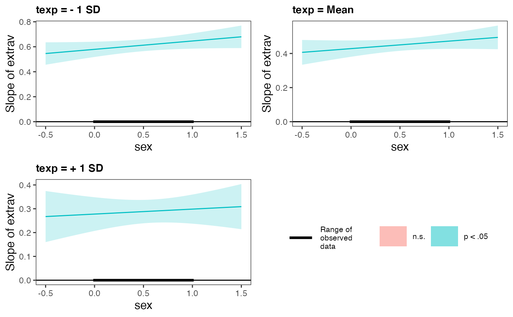
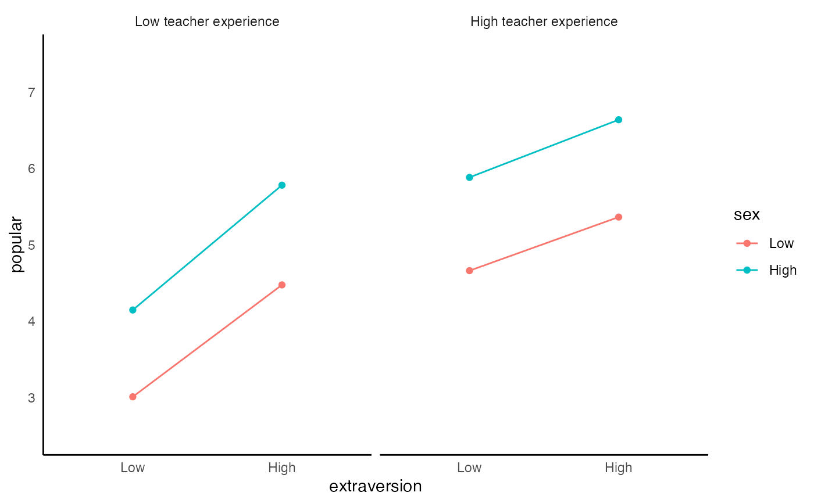
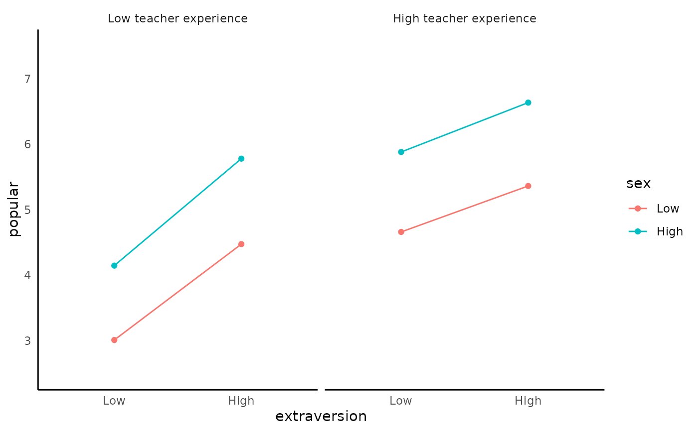

Integrated Function for Mixed Effect Model
integrated_multilevel_model_summary.Rd![[Stable]](figures/lifecycle-stable.svg)
It will first compute the mixed effect model. It will use either the nlme::lme or the lmerTest::lmer for linear mixed effect model. It will use lme4::glmer for generalized linear mixed effect model.
Then, it will print the model summary and the panel of the plots that are useful for checking assumption (default is FALSE). If you requested the interaction plot (default is TRUE), it will graph the interaction (Currently only support lme model but not glme)
If you requested simple slope summary, it will uses the interaction::sim_slopes() to generate the slope estimate at varying level of the moderator (see ?simple_slope for more detail)
integrated_multilevel_model_summary(
data,
model = NULL,
response_variable = NULL,
random_effect_factors = NULL,
non_random_effect_factors = NULL,
two_way_interaction_factor = NULL,
three_way_interaction_factor = NULL,
family = NULL,
cateogrical_var = NULL,
id = NULL,
graph_label_name = NULL,
estimation_method = "REML",
opt_control = "bobyqa",
na.action = stats::na.omit,
model_summary = TRUE,
interaction_plot = TRUE,
y_lim = NULL,
plot_color = FALSE,
digits = 3,
use_package = "lmerTest",
simple_slope = FALSE,
assumption_plot = FALSE,
quite = FALSE,
streamline = FALSE,
return_result = FALSE
)Arguments
- data
data frame
- model
lme4model syntax. Support more complicated model structure fromlme4. It is not well-tested to ensure accuracy![[Experimental]](figures/lifecycle-experimental.svg)
- response_variable
DV (i.e., outcome variable / response variable). Length of 1. Support
dplyr::select()syntax.- random_effect_factors
random effect factors (level-1 variable for HLM from a HLM perspective) Factors that need to estimate fixed effect and random effect (i.e., random slope / varying slope based on the id). Support
dplyr::select()syntax.- non_random_effect_factors
non-random effect factors (level-2 variable from a HLM perspective). Factors only need to estimate fixed effect. Support
dplyr::select()syntax.- two_way_interaction_factor
two-way interaction factors. You need to pass 2+ factor. Support
dplyr::select()syntax.- three_way_interaction_factor
three-way interaction factor. You need to pass exactly 3 factors. Specifying three-way interaction factors automatically included all two-way interactions, so please do not specify the two_way_interaction_factor argument. Support
dplyr::select()syntax.- family
a GLM family. It will passed to the family argument in glmer. See
?glmerfor possible options.- cateogrical_var
list. Specify the upper bound and lower bound directly instead of using ± 1 SD from the mean. Passed in the form of
list(var_name1 = c(upper_bound1, lower_bound1),var_name2 = c(upper_bound2, lower_bound2))- id
the nesting variable (e.g. group, time). Length of 1. Support
dplyr::select()syntax.- graph_label_name
optional vector or function. vector of length 2 for two-way interaction graph. vector of length 3 for three-way interaction graph. Vector should be passed in the form of c(response_var, predict_var1, predict_var2, ...). Function should be passed as a switch function (see ?two_way_interaction_plot for an example)
- estimation_method
character.
MLorREMLdefault isREML.- opt_control
default is
optimforlmeandbobyqaforlmerTest.- na.action
default is
stats::na.omit. Another common option isna.exclude- model_summary
print model summary. Required to be
TRUEif you wantassumption_plot.- interaction_plot
generate interaction plot. Default is
TRUE- y_lim
the plot's upper and lower limit for the y-axis. Length of 2. Example:
c(lower_limit, upper_limit)- plot_color
If it is set to
TRUE(default isFALSE), the interaction plot will plot with color.- digits
number of digits to round to
- use_package
Default is
lmerTest. Only available for linear mixed effect model. Options arenlme,lmerTest, orlme4('lme4return similar result aslmerTestexcept the return model)- simple_slope
Slope estimate at ± 1 SD and the mean of the moderator. Uses
interactions::sim_slope()in the background.- assumption_plot
Generate an panel of plots that check major assumptions. It is usually recommended to inspect model assumption violation visually. In the background, it calls
performance::check_model().- quite
suppress printing output
- streamline
print streamlined output.
- return_result
If it is set to
TRUE(default isFALSE), it will return themodel,model_summary, andplot(plotif the interaction term is included)
Value
a list of all requested items in the order of model, model_summary, interaction_plot, simple_slope
Examples
fit <- integrated_multilevel_model_summary(
data = popular,
response_variable = popular,
random_effect_factors = c(extrav),
non_random_effect_factors = texp,
two_way_interaction_factor = c(extrav, texp),
graph_label_name = c("popular", "extraversion", "teacher experience"),
id = class
)
#> boundary (singular) fit: see help('isSingular')
#> Warning: Random effect variances not available. Returned R2 does not account for random effects.
#>
#>
#> Model Summary
#> Model Type = Linear Mixed Effect Model (fitted using lme4 or lmerTest)
#> Outcome = popular
#> Predictors = extrav, texp, extrav:texp
#>
#> Model Estimates
#> ─────────────────────────────────────────────────────────────────────────────────────────────────────────────────
#> Parameter Effects Coefficient t df SE p Group 95% CI
#> ─────────────────────────────────────────────────────────────────────────────────────────────────────────────────
#> (Intercept) fixed -1.211 -3.772 1992 0.321 0.000 *** [-1.841, -0.581]
#> extrav fixed 0.891 19.822 1992 0.045 0.000 *** [ 0.803, 0.979]
#> texp fixed 0.252 12.758 1992 0.020 0.000 *** [ 0.213, 0.291]
#> extrav:texp fixed -0.027 -9.563 1992 0.003 0.000 *** [-0.033, -0.022]
#> SD (Intercept) random 0.727 NaN NaN NaN NaN class [NaN, NaN]
#> SD (extrav) random 0.018 NaN NaN NaN NaN class [NaN, NaN]
#> Cor (Intercept~extrav: class) random -1.000 NaN NaN NaN NaN class [NaN, NaN]
#> SD (Observations) random 0.943 NaN NaN NaN NaN Residual [NaN, NaN]
#> ─────────────────────────────────────────────────────────────────────────────────────────────────────────────────
#>
#> Goodness of Fit
#> ───────────────────────────────────────────────────────────────
#> AIC BIC R²_conditional R²_marginal RMSE σ
#> ───────────────────────────────────────────────────────────────
#> 5710.769 5755.576 NaN 0.415 0.921 0.943
#> ───────────────────────────────────────────────────────────────
#>
#> Model Assumption Check
#> OK: Model is converged
#> Warning: Singularity is detected. See ?lme4::isSingular()
#> Warning: Autocorrelated residuals detected (p < .001).
#> Warning: Non-normality of residuals detected (p = 0.003).
#> Unable to check autocorrelation. Try changing na.action to na.omit.
#> OK: Error variance appears to be homoscedastic (p = 0.846).
#> Cautious: Moderate multicolinearity detected (5 < VIF < 10). Please inspect the following table to identify high correlation factors.
#> Multicollinearity Table
#> ───────────────────────────────
#> Term VIF SE_factor
#> ───────────────────────────────
#> extrav 5.281 2.298
#> texp 3.900 1.975
#> extrav:texp 7.082 2.661
#> ───────────────────────────────
#>
# \donttest{
fit <- integrated_multilevel_model_summary(
data = popular,
response_variable = popular,
random_effect_factors = c(extrav, sex),
non_random_effect_factors = texp,
three_way_interaction_factor = c(extrav, sex, texp), # three-way interaction
graph_label_name = c("popular", "extraversion", "sex", "teacher experience"),
id = class,
simple_slope = TRUE, # you can request simple slope
assumption_plot = TRUE, # you can also request assumption plot
plot_color = TRUE # you can also request the plot in color
)
#> boundary (singular) fit: see help('isSingular')
#> boundary (singular) fit: see help('isSingular')
#> boundary (singular) fit: see help('isSingular')
#> boundary (singular) fit: see help('isSingular')
#> boundary (singular) fit: see help('isSingular')
#> boundary (singular) fit: see help('isSingular')
#> boundary (singular) fit: see help('isSingular')
#> boundary (singular) fit: see help('isSingular')
#> boundary (singular) fit: see help('isSingular')
#> boundary (singular) fit: see help('isSingular')
#> boundary (singular) fit: see help('isSingular')
#> Warning: Random effect variances not available. Returned R2 does not account for random effects.
#>
#>
#> Model Summary
#> Model Type = Linear Mixed Effect Model (fitted using lme4 or lmerTest)
#> Outcome = popular
#> Predictors = extrav, sex, texp, extrav:sex, extrav:texp, sex:texp, extrav:sex:texp
#>
#> Model Estimates
#> ──────────────────────────────────────────────────────────────────────────────────────────────────────────
#> Parameter Effects Coefficient t df SE p Group 95% CI
#> ──────────────────────────────────────────────────────────────────────────────────────────────────────────
#> (Intercept) fixed -0.958 -2.882 1985 0.332 0.004 ** [-1.609, -0.306]
#> extrav fixed 0.757 14.314 1985 0.053 0.000 *** [ 0.653, 0.861]
#> sex fixed 0.714 1.890 1985 0.378 0.059 [-0.027, 1.454]
#> texp fixed 0.217 10.201 1985 0.021 0.000 *** [ 0.175, 0.259]
#> extrav:sex fixed 0.094 1.471 1985 0.064 0.141 [-0.031, 0.219]
#> extrav:texp fixed -0.023 -6.489 1985 0.004 0.000 *** [-0.030, -0.016]
#> sex:texp fixed 0.020 0.861 1985 0.024 0.389 [-0.026, 0.067]
#> extrav:sex:texp fixed -0.004 -0.829 1985 0.004 0.407 [-0.012, 0.005]
#> SD (Intercept) random 0.732 NaN NaN NaN NaN class [NaN, NaN]
#> SD (extrav) random 0.080 NaN NaN NaN NaN class [NaN, NaN]
#> SD (sex) random 0.056 NaN NaN NaN NaN class [NaN, NaN]
#> Cor (Intercept~extrav) random -0.648 NaN NaN NaN NaN class [NaN, NaN]
#> Cor (Intercept~sex) random -0.477 NaN NaN NaN NaN class [NaN, NaN]
#> SD (Observations) random 0.742 NaN NaN NaN NaN Residual [NaN, NaN]
#> ──────────────────────────────────────────────────────────────────────────────────────────────────────────
#>
#> Goodness of Fit
#> ───────────────────────────────────────────────────────────────
#> AIC BIC R²_conditional R²_marginal RMSE σ
#> ───────────────────────────────────────────────────────────────
#> 4827.902 4911.915 NaN 0.656 0.720 0.742
#> ───────────────────────────────────────────────────────────────
#>
#> Model Assumption Check
#> OK: Model is converged
#> Warning: Singularity is detected. See ?lme4::isSingular()
#> Warning: Autocorrelated residuals detected (p < .001).
#> OK: residuals appear as normally distributed (p = 0.487).
#> Unable to check autocorrelation. Try changing na.action to na.omit.
#> OK: Error variance appears to be homoscedastic (p = 0.752).
#>
#> Warning: Model has interaction terms. VIFs might be inflated. You may check
#> multicollinearity among predictors of a model without interaction terms.
#> Warning: Severe multicolinearity detected (VIF > 10). Please inspect the following table to identify high correlation factors.
#> Multicollinearity Table
#> ─────────────────────────────────────
#> Term VIF SE_factor
#> ─────────────────────────────────────
#> extrav 9.167 3.028
#> sex 107.181 10.353
#> texp 6.325 2.515
#> extrav:sex 93.909 9.691
#> extrav:texp 14.154 3.762
#> sex:texp 107.690 10.377
#> extrav:sex:texp 95.252 9.760
#> ─────────────────────────────────────

#>
#> Slope Estimates at Each Level of Moderators
#> ────────────────────────────────────────────────────────────────────────
#> texp Level sex Level Est. S.E. t val. p 95% CI
#> ────────────────────────────────────────────────────────────────────────
#> Low Low 0.579 0.031 18.596 0.000 *** [0.518, 0.640]
#> High 0.646 0.031 20.660 0.000 *** [0.585, 0.708]
#> Mean Low 0.429 0.024 17.555 0.000 *** [0.381, 0.476]
#> High 0.472 0.023 20.434 0.000 *** [0.427, 0.518]
#> High Low 0.278 0.036 7.697 0.000 *** [0.207, 0.348]
#> High 0.298 0.031 9.565 0.000 *** [0.237, 0.360]
#> ────────────────────────────────────────────────────────────────────────
#> Note: For continuous variable, low and high represent -1 and +1 SD from the mean, respectively.

#> Warning: You requested > 2 plots. Since 1 plot can be displayed at a time, considering using Rmd for better viewing experience.

# }